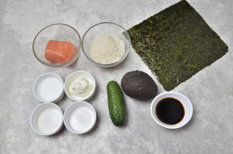
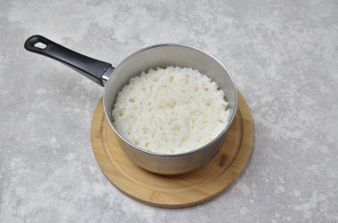
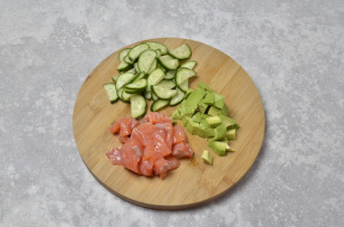
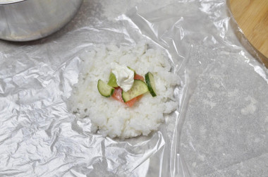
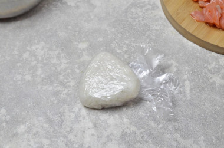
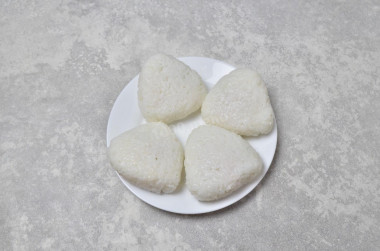
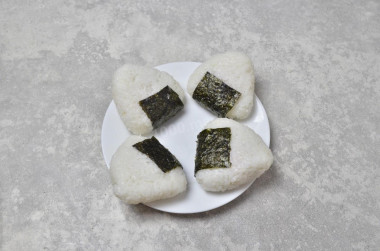
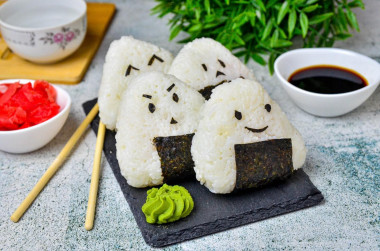

-
Шаг 1:

Как сделать онигири в домашних условиях?
Подготовьте продукты.
Данного количества ингредиентов хватит на три больших или четыре средних онигири.
Рис возьмите специальный, для суши.
Если такого не найдете, то подойдет самый обычный краснодарский, круглозерный.
-
Шаг 2:

Рис промойте в нескольких водах, до прозрачности. Затем залейте его холодной водой и поставьте вариться на большой огонь. После закипания огонь сделайте средним и варите рис под крышкой до полного испарения воды, 15-20 минут. Всыпьте в рисовый уксус сахар и соль, перемешайте. Влейте смесь в горячий рис, перемешайте и оставьте остывать. Вместо рисового уксуса вы можете взять обычный столовый, 9%.
-
Шаг 3:

Подготовьте продукты для начинки. У меня это малосольная семга, свежий огурец и авокадо. Также подойдут крабовые палочки, тунец, курица, грибы. Выбирайте начинку по своему вкусу. Нарежьте продукты для начинки на небольшие кусочки.
-
Шаг 4:

Осталось сформировать онигири. Вы можете это сделать на тарелке, на ладони или, как я, на пакете. Выложите рис в тонкую лепешку на пакет. В середину положите начинку. Также положите немного сливочного сыра.
-
Шаг 5:

Соберите концы пакета узелком так, чтобы начинка оказалась внутри риса. Утрамбуйте его по форме треугольника — традиционной форме онигири. Откройте пакет и доложите рис туда, где это необходимо. Удобнее будет брать онигири руками, смоченными в холодной воде — так к ним не будет прилипать рис.
-
Шаг 6:

Аналогичным образом сформируйте все онигири.
-
Шаг 7:

Чтобы их было удобнее брать руками, оберните один край онигири кусочком нори. Есть варианты, когда их заворачивают в нори полностью.
-
Шаг 8:

Вы можете украсить готовые онигири глазками и ротиками, вырезанными из нори — они обязательно понравятся детям. Подавайте онигири с соевым соусом, васаби и маринованным имбирем, как классические суши и роллы. Приятного аппетита!